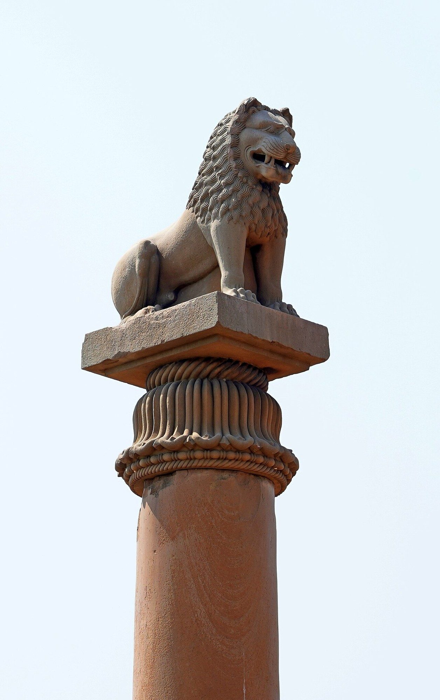

Chapter 8: Kingship, Dhamma and Law in the Buddhist and Jain Traditions¶
The Brahmanical śāstras are not the only Indian sources of political and legal thought. The Buddhist and Jain traditions, which arose in the eastern Gangetic plain in the fifth century BCE, produced their own accounts of the origin of kingship and society, their own ideals of the righteous ruler, and — in the monastic codes — some of the most detailed procedural law to survive from early India. Aśoka, the most powerful king of the period, proclaimed a policy of dhamma in inscriptions across the subcontinent. Jain authors wrote works on polity and adapted the Brahmanical scheme of social orders to their own purposes, and Jain kings and merchants shaped the legal culture of western India for centuries.
This chapter surveys these traditions. It has two aims: to represent them on their own terms rather than as variations on a Brahmanical norm, and to avoid the opposite error of treating them as egalitarian alternatives to Brahmanical hierarchy. The early Buddhist and Jain communities challenged the Brahmins’ claims to superiority by birth, but they did not set out to abolish kingship, social rank or slavery in society at large, and their own institutions had hierarchies of their own (Chakravarti 1987).
8.1 The World of the Śramaṇas¶
The Buddha (c. 480–400 BCE on the now widely accepted short chronology; the traditional Theravāda dates are 624–544 BCE) and Mahāvīra, the twenty-fourth Jina of the Jains and an older contemporary of the Buddha, belonged to a broad movement of renouncers (śramaṇa) who rejected the authority of the Veda and the efficacy of sacrifice. They taught in a region of new cities and expanding kingdoms — Magadha under Bimbisāra and Ajātaśatru, Kosala under Prasenajit — and of clan-based polities called gaṇa or saṅgha, such as the Śākyas (the Buddha’s own clan), the Mallas and the Licchavis of Vaiśālī, leaders of the Vajjian confederacy.
These gaṇa-saṅghas are sometimes called “republics”. They were governed not by a single hereditary king but by assemblies of the heads of leading Kṣatriya families, each of whom might bear the title rājā; decisions were taken in a hall (santhāgāra) after discussion. They were oligarchies of a ruling clan, which excluded the many dependants, labourers and slaves who lived in their territory, and it is misleading to call them democracies (Sharma 1959; Thapar 1984). They nevertheless show that monarchy was not the only form of government known in early India. The Arthaśāstra’s Book 11 treats such confederacies as dangerous rivals to be divided and absorbed (Chapters 3 and 7), and most of them were absorbed into the Magadhan empire within a few centuries.
8.2 The Buddha and the Vajjian Assembly¶
The Mahāparinibbāna Sutta (Dīgha Nikāya 16), which recounts the last months of the Buddha’s life, opens with a political episode. King Ajātasattu of Magadha resolves to destroy the Vajjis and sends his minister to ask the Buddha’s opinion. The Buddha, turning to his attendant Ānanda, asks whether the Vajjis still observe certain practices, and declares that as long as they do so, they may be expected to prosper and not decline. The seven “conditions of non-decline” (aparihāniyā dhammā) are: that the Vajjis meet often and in large numbers in assembly; that they meet, act and disperse in concord; that they do not authorise what has not been authorised nor abolish what has been authorised, but proceed according to the ancient Vajjian law as established; that they honour and listen to their elders; that they do not abduct or coerce the women and girls of their clans; that they honour their shrines and maintain their customary offerings; and that they protect and support the arahants. The Buddha then applies a parallel list of conditions to his own monastic community. Ajātasattu’s minister concludes that the Vajjis cannot be defeated in war — except by diplomacy or by sowing dissension among them.
The passage is often cited as evidence of the Buddha’s sympathy for “republican” government. It certainly shows respect for the governance of the gaṇas and for deliberation, concord and adherence to established custom. It is also a teaching about the conditions for the survival of the saṅgha itself, and it ends with the observation — worthy of the Arthaśāstra — that a confederacy is vulnerable to dissension.
8.3 The Origin of Kingship: The Aggañña Sutta¶
The Aggañña Sutta (Dīgha Nikāya 27), the “discourse on what is primary”, contains the best-known Buddhist account of the origins of society and kingship (Collins 1993). It is addressed to two Brahmin novices who have been reviled by other Brahmins for joining the Buddha’s order. The Brahmins claim, the young men report, that only Brahmins are the best varṇa and the true sons of Brahmā, born from his mouth. The Buddha replies by observing that Brahmin women are seen to menstruate, become pregnant and give birth like any others, and he then tells a story of the world’s evolution.
At the beginning of a cycle, beings are luminous and self-sustaining. Gradually they begin to eat a savoury earth, become coarser, and are differentiated in appearance; pride in beauty appears. Eventually rice grows of itself, and beings take it as needed. When some begin to store rice out of laziness, the rice no longer grows back; the beings divide the land into fields with boundaries. Then one being, greedy, takes rice from another’s field; he is reproached and promises not to do it again, but does so a second and third time; he is beaten. “Thus theft appeared, and censure, and lying, and punishment.” The beings then gather and agree to choose one among them who will be angry with what should provoke anger, censure what should be censured and banish whoever should be banished, in return for a share of their rice. They choose the most handsome, attractive and capable among them. Because he is “agreed upon by the great people” (mahājanasammata), he is called Mahāsammata, the “Great Elect”; because he is “lord of the fields” (khettānaṃ adhipati), he is called khattiya; and because he “delights others with dhamma” (dhammena pare rañjeti), he is called rājā. The text then accounts for the Brahmins, Vessas and Suddas by similar punning etymologies, and concludes that whoever, of any varṇa, lives a good life and becomes an arahant is “foremost”. Even so, it adds that among those who rely on lineage, the khattiya is the best.
Modern readers have often called this a “social contract” theory of kingship and contrasted it with the divine origin of the king in the Manusmṛti (Chapter 5). There is a genuine difference: in the Buddhist story kingship is a human institution, created by agreement to deal with theft, and the king is paid for his services. But Steven Collins, in his annotated translation, argued that the sutta is in large part a parody — a witty retelling, in a Buddhist key, of Brahmanical myths of origin and of the etymologies the Brahmins used to justify their claims — and that its main purpose is to deny that varṇa is a matter of divine creation, not to found a political theory (Collins 1993). Its “contract” gives the people no right to remove the king, and the later Buddhist tradition used the figure of Mahāsammata as the ancestor of royal lineages rather than as a model of popular sovereignty (Tambiah 1976).
8.4 The Wheel-Turning King¶
8.4.1 The Cakkavatti-sīhanāda Sutta¶
The ideal Buddhist ruler is the cakkavattin (Sanskrit cakravartin), the “wheel-turning” universal monarch, who conquers the four quarters not by force but by the power of righteousness, symbolised by a divine wheel that rolls before him. The figure is pan-Indian: Jain texts list twelve cakravartins among their great persons, and Brahmanical texts know the cakravartin as a world-ruler. The Cakkavatti-sīhanāda Sutta (Dīgha Nikāya 26) gives the fullest Buddhist account.
A cakkavattin named Daḷhanemi rules righteously and, when the wheel slips from its place, hands the kingdom to his son. Each new king must himself earn the wheel by practising the “noble duty of a wheel-turner”: relying on dhamma, honouring it, he provides lawful protection and security to his household, his troops, Kṣatriyas, vassals, Brahmins and householders, townspeople and country people, ascetics and Brahmins, and animals and birds; he lets no wrongdoing prevail in his realm; and “to whoever in the kingdom is poor, give wealth”. A later king fails to give wealth to the poor. Poverty spreads; a poor man steals; the king, when told he stole because he had nothing, gives him wealth to live on and support his family. Others then steal in order to receive wealth, so the king changes policy and has a thief executed. Thieves then arm themselves and kill those they rob; violence, lying, slander, adultery and other evils spread, and the human lifespan declines, generation by generation, from eighty thousand years to ten. Only after a period of mutual slaughter do the survivors turn again to good conduct, and the world gradually recovers, until the future Buddha Metteyya appears in the time of a new wheel-turning king.
The sutta has been read as a theory of the social causes of crime: it is the king’s failure to relieve poverty that sets off the decline, and the resort to execution makes things worse. It is also a myth of cosmic decline and renewal, and it insists, like the Brahmanical texts, that the king must suppress wrongdoing. Its striking feature is the link it makes between the ruler’s economic duty to the poor and the moral condition of society.
8.4.2 Kūṭadanta’s Sacrifice¶
A similar argument appears in the Kūṭadanta Sutta (Dīgha Nikāya 5). A Brahmin asks the Buddha how to perform a great sacrifice, and the Buddha tells him of a king of the past who wished to do so. The king’s chaplain advises that the country is troubled by bandits, and that it would be wrong to tax it further; nor will the bandits be suppressed by execution, imprisonment, fines or banishment, since survivors will continue to harass the realm. Instead, the king should give seed and fodder to those who farm and keep cattle, capital to those who trade, and food and wages to those in government service. Then people, intent on their own occupations, will not harass the realm, revenue will increase, and the country will be at peace, “with doors open”. The king follows this advice, and then performs a sacrifice in which no animal is killed and no labour is forced. The story uses the form of a royal sacrifice to teach an argument about economic remedies for disorder — and to criticise Vedic sacrifice.
8.4.3 The Ten Royal Virtues¶
The Jātakas, the stories of the Buddha’s former lives, frequently refer to ten “royal virtues” (dasa rājadhammā): generosity (dāna), moral conduct (sīla), liberality (pariccāga), honesty (ajjava), gentleness (maddava), self-restraint (tapa), freedom from anger (akkodha), non-violence (avihiṃsā), patience (khanti) and non-opposition, that is, not obstructing what is right (avirodhana). The list became a central element of royal ideology in the Buddhist kingdoms of Sri Lanka and Southeast Asia, where kings were expected to embody these virtues and to protect the Buddhist order (Tambiah 1976).
8.4.4 The Buddha and Kings¶
The Pali canon is realistic about kings. They appear as patrons and devotees, like Bimbisāra of Magadha and Pasenadi of Kosala, but also as dangers: kings are listed with fire, water and thieves among the threats to property, and Ajātasattu came to the throne by having his father killed. The monastic code forbids monks to watch armies and limits their contact with soldiers. Steven Collins has argued that the Pali texts contain two attitudes: an “ethic of reciprocity”, which accepts that kings must punish and fight, and an “ethic of non-violence”, expressed in the monastic ideal, which judges all violence as wrong; Buddhist political thought lives with the tension between them (Collins 1998).
8.5 The Saṅgha as a Legal Community¶
8.5.1 The Vinaya¶
The Buddhist monastic code, the Vinaya, is one of the largest bodies of early Indian law. It survives in several versions belonging to different schools (Theravāda in Pali; Mūlasarvāstivāda, Dharmaguptaka and others in Sanskrit, Chinese and Tibetan). At its core is the Pātimokkha, the list of rules recited by monks every fortnight, with a longer list for nuns, arranged in classes by gravity. Around the rules the Vinaya builds a large casuistic literature, recording for each rule the case that occasioned it, the definitions of its terms, and the exceptions (Horner 1938).
8.5.2 The Structure of the Code¶
The Theravāda Pātimokkha for monks contains 227 rules in eight classes: four pārājika offences — sexual intercourse, theft of a certain value, killing a human being and falsely claiming spiritual attainments — entailing permanent expulsion; thirteen saṅghādisesa offences (requiring a meeting of the community and a period of probation); two “undetermined” (aniyata) cases, in which the offence depends on the testimony of a trustworthy laywoman; thirty offences involving forfeiture of an improperly acquired object (nissaggiya pācittiya), such as an extra robe or money; ninety-two offences requiring confession (pācittiya), from lying to drinking alcohol; four offences to be acknowledged (pāṭidesanīya); seventy-five rules of training (sekhiya) concerning deportment; and the seven ways of settling disputes. Each rule is accompanied in the Suttavibhaṅga by a story of the incident that led the Buddha to lay it down, a word-by-word commentary, and a discussion of the cases in which it does or does not apply — a method strikingly similar to the casuistry of legal commentaries elsewhere.
The Vinaya also records disputes within the saṅgha that tested its procedures. The quarrel among the monks of Kosambī, which the Buddha was unable to settle, and the council held at Vesālī about a century after his death to decide whether monks could accept gold and silver, show communities arguing about the interpretation of rules and using formal procedures to resolve disagreements. Disagreements over discipline were among the causes of the schisms that divided the early Buddhist schools (Horner 1938).
8.5.3 Procedure¶
The Vinaya’s procedure for collective decisions is notably formal. A valid act of the community (saṅghakamma) requires a quorum of fully ordained monks within a defined boundary (sīmā), the consent of absent members, a formal motion (ñatti), and in important cases three further proclamations, with silence taken as assent. The Samatha rules lay down seven ways of settling disputes (adhikaraṇa-samatha): a decision in the presence of the parties and of the relevant rules (sammukhāvinaya); a verdict that a monk is innocent by reason of his mindfulness (sativinaya); a verdict of past insanity (amūḷhavinaya); acting on the confession of the accused (paṭiññātakaraṇa); decision by the majority, determined by voting with tickets (salākā) (yebhuyyasikā); a decision against a monk whose guilt is established but who is evasive (tassapāpiyasikā); and “covering over with grass” (tiṇavatthāraka), a general settlement in which both parties confess and mutual recriminations are dropped.
It is tempting to call this “democracy”. It is better described as a carefully regulated procedure for collective decision within a voluntary religious order: it applied only to fully ordained members, it governed monastic discipline and property, and the ticket vote was a last resort, organised by an appointed officer who could set it aside if he thought the wrong side would win. What the Vinaya does show is that sophisticated procedural thinking — about quorum, notice, motion, evidence and the finality of decisions — was alive in early India outside the Brahmanical tradition.
8.5.4 Exclusions and Hierarchies¶
The saṅgha admitted members of all varṇas, and the texts insist that within it seniority depends on the date of ordination, not on birth. But ordination was refused to certain categories: slaves, debtors, soldiers in royal service, criminals wanted by the king, persons with certain diseases or deformities, and minors without their parents’ consent. Most of these rules protected the saṅgha from conflict with kings, creditors and masters; their effect was that the order did not become a refuge for the unfree. Nuns were admitted, but under eight “weighty rules” (garudhamma) that subordinated the order of nuns to that of monks — a nun of a hundred years’ standing must rise and salute a monk ordained that day. Uma Chakravarti’s study of early Buddhism concluded that the saṅgha offered social mobility within its own walls while accepting the stratified social order outside (Chakravarti 1987).
8.6 Aśoka’s Dhamma¶
8.6.1 The Inscriptions¶
Aśoka, the third Mauryan emperor (r. c. 268–232 BCE), is known above all from his inscriptions: the Major and Minor Rock Edicts, the Pillar Edicts and other records, engraved on rocks and polished stone pillars from Afghanistan to Karnataka (Figures 8.1 and 8.2), mostly in Prakrit in the Brāhmī script, but also in Kharoṣṭhī and, in the north-west, in Greek and Aramaic (Hultzsch 1925; Thapar 1961). They are the earliest deciphered royal records in India and the only extended statement of political ideals by an Indian king of antiquity.

8.6.2 Kaliṅga and the Turn to Dhamma¶
The thirteenth Rock Edict records that eight years after his consecration Aśoka conquered Kaliṅga (in modern Odisha), and that 150,000 people were deported, 100,000 killed and many times that number died. Afterwards, the edict says, the king felt remorse, and he now regards “conquest by dhamma” (dhammavijaya) as the best conquest. He claims to have won such conquests among the Greek kings of the west — Antiochus, Ptolemy, Antigonus, Magas and Alexander, whom he names — and among peoples of the south and of the frontiers. The same edict warns the forest peoples (aṭavi) within his dominions that the king, though repentant, still has power, and that they should reform lest they be killed.
8.6.3 The Content of Dhamma¶
Aśoka’s dhamma, as the inscriptions describe it, is a practical ethic: obedience to parents and elders, generosity to Brahmins and śramaṇas, proper treatment of slaves and servants, abstention from killing living beings, moderation in spending and possessions, and restraint in speech, especially in speaking about other religious groups. Rock Edict XII urges respect for all sects (pāsaṇḍa): whoever honours his own sect while disparaging others injures his own. Rock Edict I prohibits animal sacrifice in the capital and records that the killing of animals for the royal kitchen has been reduced to two peacocks and a deer a day, and will cease. Rock Edict II records the provision of medical treatment for people and animals, the planting of medicinal herbs and the digging of wells along roads, in his own dominions and those of neighbouring kings. Rock Edict V announces the creation, thirteen years after his consecration, of a new class of officials, the “great officers of dhamma” (dhamma-mahāmātra), to promote dhamma among all groups and to look after the welfare of prisoners, the aged and the destitute.


8.6.4 Justice and Punishment¶
Several inscriptions concern justice. The separate edicts at Dhauli and Jaugada in Kaliṅga, addressed to the officials of the region, begin with the declaration that “all men are my children”: just as the king desires every kind of welfare and happiness in this world and the next for his own children, so he desires it for all men. The edicts rebuke officials who imprison or torment people without cause, and announce that inspecting officers will be sent every five years to ensure that the judicial officers are acting fairly. Pillar Edict IV, issued twenty-six years after his consecration, states that the king has given the rajjūka officers authority over judgments and punishments, so that they may act confidently and without fear, and declares that there should be uniformity in judicial procedure (vyavahāla-samatā) and in punishment (daṃḍa-samatā). It grants a respite of three days to prisoners condemned to death, so that their relatives may seek a reconsideration or the prisoners may prepare for the next world by fasts and gifts. Pillar Edict V lists animals that may not be killed and days on which fishing and the castration of animals are forbidden.
8.6.5 Interpretation¶
Aśoka’s own inscriptions tell us that he became a Buddhist lay follower, and some of them address the saṅgha directly, recommending particular texts and warning against schism. Romila Thapar argued that his dhamma was nevertheless not simply Buddhism: it was a policy of social ethics designed to hold together an empire of great diversity, emphasising tolerance and social responsibility rather than doctrine (Thapar 1961). Other scholars have stressed its religious sincerity, and Nayanjot Lahiri’s biography reconstructs the king’s development over his reign from the inscriptions and from the places where they were set up (Lahiri 2015). The find-spots themselves raise a further question: many lie along routes and in frontier zones rather than in the Gangetic heartland, and historians debate how far the empire they mark was directly administered rather than held through governors, local rulers and the control of communications (Figure 8.1) (Singh 2008). Either way, the inscriptions represent a remarkable attempt by a ruler to make moral persuasion a principle of government, and to announce it publicly in the languages of his subjects.
They also have limits that a balanced account must record. Aśoka retained the death penalty; his edicts regulate it rather than abolish it. The dhamma-mahāmātras were officials who intervened in the lives of subjects in the name of morality, and the Kaliṅga edict’s warning to the forest peoples is a threat. The inscriptions say nothing about the abolition of varṇa or slavery; they ask that slaves and servants be treated properly. And the later Buddhist legend of Aśoka in the Aśokāvadāna, which includes stories of his cruelty before his conversion and of his violence against heretics, shows that the tradition itself remembered a more complicated figure. The modern Indian state’s adoption of the Sarnath lion capital as its emblem and of the dharma-wheel on its flag (Chapter 20) is a modern act of reception.
8.7 Buddhist Kingship beyond India¶
Buddhist ideas of kingship had their longest life outside India. In Sri Lanka, the Pali chronicles (Dīpavaṃsa, Mahāvaṃsa) present kings as protectors of the Buddha’s teaching and the saṅgha, and the legend of the Buddha’s own visits to the island links political legitimacy with Buddhist sanctity. In Burma, Thailand, Laos and Cambodia, kings styled themselves dhammarāja and cakkavattin, supported and purified the saṅgha, and were expected to embody the ten royal virtues. Stanley Tambiah described the resulting order as a “galactic polity”, in which a central king surrounded himself with replicas of his own court in concentric circles of lesser rulers — a structure he compared to the Arthaśāstra’s maṇḍala (Tambiah 1976). Law in these kingdoms drew on Indian models: the Burmese dhammathat law books, for instance, traced their authority to a legendary sage Manu, though their content was adapted to local custom (Section 9.11).
The longest-lived of these legal traditions was in Thailand. After the destruction of Ayutthaya in 1767, King Rama I of the new Chakri dynasty ordered a revision of the kingdom’s laws, completed in 1805 and known as the “Law of the Three Seals”. It opened with a version of the dhammasattham, the law book traced to the sage Manu, adapted to Buddhist cosmology and kingship, followed by royal laws on procedure, property, marriage, slavery and crime. It remained the basis of Thai law until the codifications of the early twentieth century. The case shows how the Indian idea of a law book attributed to Manu could be absorbed into a Buddhist monarchy far from India and transformed in the process.
8.8 Jain Political and Legal Thought¶
8.8.1 The First King¶
Jain universal history begins its account of civilisation with Ṛṣabha (Ṛṣabhadeva), the first Jina of the present age. In the Digambara version told in Jinasena’s Ādipurāṇa (9th century), Ṛṣabha was also the first king: when the wish-fulfilling trees of the age of plenty disappeared, he taught people the six means of livelihood — the use of arms, writing, agriculture, learning, trade and crafts — founded villages and towns, and established the social orders, before renouncing the world to become the first Tīrthaṅkara. His son Bharata became the first universal monarch (cakravartin), and in Jinasena’s account it was Bharata who created the Brahmin order from among the most pious Jain laymen (Jaini 1979; Dundas 2002).
This narrative is a striking example of the Jain response to Brahmanical social theory. Jinasena accepted the framework of varṇa, but grounded it in human institution by a Jain king rather than in the body of the creator, and he defined a Jain Brahmin by conduct and initiation. He also composed Jain versions of the life-cycle rites (saṃskāra). Padmanabh Jaini saw this as part of a deliberate “Brahmanisation” of Jain lay life that helped the Jain community to survive as a socially respectable group in medieval India (Jaini 1979).
8.8.2 Great Persons and Kings¶
Jain narrative literature recounts the lives of the sixty-three “illustrious persons” (śalākāpuruṣa): the twenty-four Jinas, twelve cakravartins, and nine each of three classes of heroes (the Baladevas, the Vāsudevas and their antagonists the Prativāsudevas). The most famous telling is Hemacandra’s Triṣaṣṭiśalākāpuruṣacarita (12th century). Kingship in these stories is honourable but spiritually dangerous: Vāsudevas, who kill their enemies in battle, go to hell; cakravartins who renounce their kingdoms attain liberation. Jain texts thus share with the Buddhist ones the tension between the necessary violence of rule and the renouncer’s ideal of non-violence (ahiṃsā).
8.8.3 Somadeva’s Nītivākyāmṛta¶
The most important Jain work on polity is the Nītivākyāmṛta (“Nectar of Aphorisms on Polity”) of Somadeva Sūri (10th century), a Digambara monk who also wrote the Yaśastilaka (959), a romance in mixed prose and verse (campū). Written in short aphorisms, it covers the same ground as the Arthaśāstra and Kāmandaka — the king’s training, the ministers, the constituent elements of the state, envoys, spies, the treasury and war — and draws heavily on the earlier nīti tradition. It frames this material within a Jain ethical outlook, insisting on the king’s self-control and on dharma, but it accepts that the king must punish wrongdoers and wage war when necessary. Its existence shows that the śāstric science of polity was common property, adaptable to different religious frameworks.
8.8.4 Jain Kings and Merchants¶
Several Indian rulers patronised or professed Jainism. Khāravela of Kaliṅga (c. 1st century BCE), whose Hāthīgumphā inscription opens with a salutation to the Arhats, recorded his campaigns and public works alongside gifts to Jain ascetics. In western and southern India, Jainism enjoyed the patronage of several dynasties, including the Gaṅgas and some Rāṣṭrakūṭa rulers in the south and the Caulukyas of Gujarat. The Caulukya king Kumārapāla (r. 1143–1172) was a patron of the Jain scholar Hemacandra; Jain sources credit him with proclaiming the prohibition of animal slaughter (amāri) in his realm and with abandoning the royal right to seize the property of men who died without sons, which had impoverished their widows. These accounts come from Jain biographers and should be read as such, but they show how Jain ethical ideals could be translated into royal policy.
Jain merchant communities, especially in Gujarat and Rajasthan, developed their own institutions: the mahājan, an association of merchants that regulated trade, settled disputes and administered charities, including animal shelters (pāñjarāpoḷ). Under British rule, Jains were generally governed by Hindu law in matters of family and inheritance, unless they could prove a distinct custom, and the question of a separate Jain law became a subject of litigation and of reformist writing in the early twentieth century.
8.8.5 Jain Ethics and Economic Life¶
Jain teaching shaped legal and economic life less through treatises on polity than through the ethics it required of lay people. The lay vows (aṇuvrata) — limited versions of the ascetic’s great vows of non-violence, truthfulness, not stealing, chastity and non-possession — were elaborated in manuals of lay conduct (śrāvakācāra). These manuals forbade occupations that involved great violence to living beings, such as charcoal-burning, clearing forests, draining lakes and trading in weapons, poisons, ivory and lac, and they encouraged honest dealing, the limitation of possessions and generous giving (Jaini 1979). Such rules help to explain why Jain communities in western India came to be concentrated in trade and banking, and why their merchant associations combined commercial regulation with religious charity.
8.9 Later Buddhist Advice to Kings¶
Buddhist authors continued to write advice for rulers after the canonical period. The Ratnāvalī (“Precious Garland”) attributed to the philosopher Nāgārjuna (c. 2nd century CE), composed as a letter of counsel to a king, urges the ruler to govern with compassion: to care for the sick, the orphaned and the destitute, to build rest-houses and supply water along roads, to treat prisoners humanely, and to punish in a spirit of compassion rather than anger. Āryaśūra’s Jātakamālā retold stories of the Buddha’s former lives as a king who sacrificed himself for his subjects. Such texts, widely read in the Buddhist world, kept alive an ideal of the compassionate ruler that complemented, and sometimes challenged, the more coercive vision of the Arthaśāstra.
Buddhist rulers did not, however, abandon the ordinary instruments of government. Kings who patronised Buddhism — from the Kuṣāṇas to the Pālas of Bengal (8th–12th centuries), whose inscriptions combine Buddhist invocations with standard formulae of land grants to Brahmins — waged war, collected taxes and punished offenders like other kings. The Buddhist ideal shaped royal self-representation and patronage more than it transformed the state.
8.10 Monasteries, Patronage and Decline¶
Buddhist and Jain institutions depended on the patronage of rulers, merchants and lay communities. Inscriptions record gifts to monasteries from kings and queens of many dynasties — Mauryas, Śakas, Sātavāhanas, Kuṣāṇas, Guptas, Maitrakas, Pālas — and from guilds, merchants, monks, nuns and lay men and women. Great monastic universities such as Nālandā (founded in the fifth century CE) and Vikramaśīla (founded by the Pāla king Dharmapāla around 800) were supported by grants of villages whose revenues maintained the monks and their students. Monasteries thus became, like temples, corporate landholders, with their own rules for the management of property.
Buddhism declined in most of India between the seventh and thirteenth centuries, for reasons that historians still debate: the loss of royal and mercantile patronage as political and economic conditions changed; the growth of devotional Hindu traditions that absorbed many of Buddhism’s popular functions; the concentration of Buddhist life in large monasteries dependent on a few patrons; and, at the end, the destruction of the great monasteries of Bihar and Bengal during the Turkish campaigns of c. 1193–1205 associated with Bakhtiyār Khaljī. The Tibetan pilgrim Dharmasvāmin, who visited Nālandā in 1234, found it still occupied but much reduced. Buddhism survived in the Himalayan regions and in parts of eastern India, and flourished in Sri Lanka, Southeast Asia, Tibet and East Asia. Jainism, by contrast, survived in western and southern India, sustained by merchant communities and by its accommodation with the social order around it.
8.11 Assessment¶
Three conclusions emerge. First, the Buddhist and Jain traditions offered genuinely different accounts of political authority: kingship as a human institution created to restrain theft (the Aggañña), the king’s duty to relieve poverty (the Cakkavatti-sīhanāda and Kūṭadanta), and a sustained moral critique of violence. Second, they did not reject kingship, punishment or social hierarchy as such; their sharpest criticism was directed at the Brahmins’ claim to superiority by birth, and their monastic institutions, while open to all varṇas, accommodated rather than challenged slavery and the subordination of women. Third, their most enduring institutional legacy lies in the monastic law of the saṅgha, the Aśokan model of moral government, and the royal ideologies of Buddhist Asia.
In modern India, B. R. Ambedkar turned to Buddhism as a religion of equality. In 1956, shortly before his death, he converted to Buddhism with several hundred thousand followers at Nagpur, and his The Buddha and His Dhamma (published 1957) reinterpreted the Buddha’s teaching as a social gospel of liberty, equality and fraternity (Ambedkar 1957; Zelliot 1992). At the conversion ceremony he administered to his followers twenty-two vows, which included the renunciation of Hindu deities and rituals and the affirmation of the equality of all human beings. Ambedkar’s reading was a new interpretation for a new purpose; it is itself a major chapter in the history of Indian political thought (Chapters 10 and 20).
8.12 Principal Passages¶
Table 8.1 lists the principal passages discussed in this chapter.
| Source | Subject |
|---|---|
| Dīgha Nikāya 5 (Kūṭadanta) | Economic remedies for disorder; a sacrifice without killing |
| Dīgha Nikāya 16 (Mahāparinibbāna) | The seven conditions of welfare of the Vajjis |
| Dīgha Nikāya 26 (Cakkavatti-sīhanāda) | The wheel-turning king; poverty and the decline of morality |
| Dīgha Nikāya 27 (Aggañña) | Origin of society and of the “Great Elect” |
| Jātakas | The ten royal virtues |
| Vinaya Piṭaka | Pātimokkha rules; formal acts; settlement of disputes |
| Rock Edict I | Prohibition of animal sacrifice in the capital |
| Rock Edict II | Medical treatment for people and animals; wells and trees |
| Rock Edict V | Appointment of officers of dhamma |
| Rock Edict XII | Respect for all sects |
| Rock Edict XIII | The Kaliṅga war; conquest by dhamma; warning to forest peoples |
| Separate Rock Edicts (Dhauli, Jaugada) | “All men are my children”; instructions to judicial officers |
| Pillar Edict IV | Authority of the rajjūkas; uniformity of procedure and punishment; three days’ respite |
| Pillar Edict V | Animals not to be killed |
| Hāthīgumphā inscription | Deeds of the Jain king Khāravela |
| Jinasena, Ādipurāṇa | Ṛṣabha as first king; Bharata and the Jain Brahmins |
| Somadeva, Nītivākyāmṛta | Jain aphorisms on polity |
8.13 Summary¶
-
Early Buddhist texts describe kingship as a human institution created to restrain theft (the Aggañña Sutta), tie the king’s legitimacy to righteousness and to the relief of poverty (the Cakkavatti-sīhanāda and Kūṭadanta Suttas), and list ten royal virtues. Collins reads the Aggañña largely as a parody of Brahmanical claims.
-
The gaṇa-saṅgha polities were governed by assemblies of ruling clans; the Buddha praised the Vajjis’ practice of meeting in concord and following their ancient law.
-
The monastic code (Vinaya) contains detailed procedural law for the saṅgha, including formal motions, majority voting by tickets and seven methods of settling disputes; it excluded slaves, debtors and soldiers from ordination and subordinated nuns to monks.
-
Aśoka’s inscriptions proclaim a policy of dhamma: non-violence towards animals, respect for all sects, welfare works, officers of dhamma and fair judicial procedure. He retained the death penalty and warned the forest peoples of his power.
-
Jain authors adapted the Brahmanical framework of varṇa and the science of polity, and Jain ethics shaped merchant communities. Buddhist kingship had its longest life in Sri Lanka and Southeast Asia, and was reinterpreted in modern India by Ambedkar.
Further Reading¶
For the Pali texts, see the translations of the Dīgha Nikāya and, for the Aggañña Sutta, Collins (1993); for the Vinaya, Horner (1938). Collins (1998) and Tambiah (1976) are the major studies of Buddhist political thought; Chakravarti (1987) examines the social context critically. On Aśoka, see Thapar (1961), Lahiri (2015) and the inscriptions in Hultzsch (1925). On the Jains, Jaini (1979) and Dundas (2002).